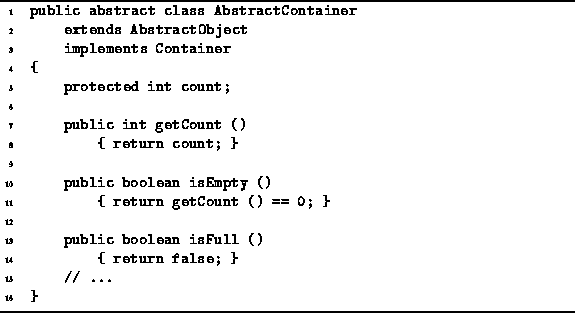

Data Structures and Algorithms
with Object-Oriented Design Patterns in Java
Data Structures and Algorithms
with Object-Oriented Design Patterns in Java
Program  introduces
an abstract class called AbstractContainer.
It is intended to be used as the base class from which
concrete container realizations are derived.
As illustrated in Figure ,
the AbstractContainer class extends the AbstractObject class
(defined in Program )
and it implements the Container interface
(defined in Program ).
introduces
an abstract class called AbstractContainer.
It is intended to be used as the base class from which
concrete container realizations are derived.
As illustrated in Figure ,
the AbstractContainer class extends the AbstractObject class
(defined in Program )
and it implements the Container interface
(defined in Program ).
A single field, count, is used. This field is used to keep track of the number of objects held in the container. The count field is initially zero by default. It is the responsibility of the derived class to update this field as required.

Program: AbstractContainer fields and methods.
The getCount method is an accessor that returns the number of items contained in the container. The getCount method simply returns the value of the count field.
The isEmpty and isFull methods are boolean-valued accessors which indicate whether a given container is empty or full, respectively. Notice that the isEmpty method does not directly access the count field. Instead it calls getCount. As long as the getCount method has the correct semantics, the isEmpty method will too.
In some cases, a container is implemented in a way which makes its capacity finite. When this is the case, it is necessary to be able to determine when the container is full. The isFull method is a boolean-valued accessor which returns the value true if the container is full. The default version always returns false.
 Copyright © 1998 by Bruno R. Preiss, P.Eng. All rights reserved.
Copyright © 1998 by Bruno R. Preiss, P.Eng. All rights reserved.